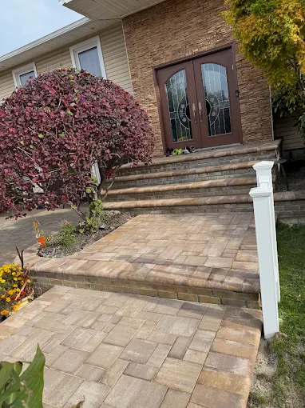
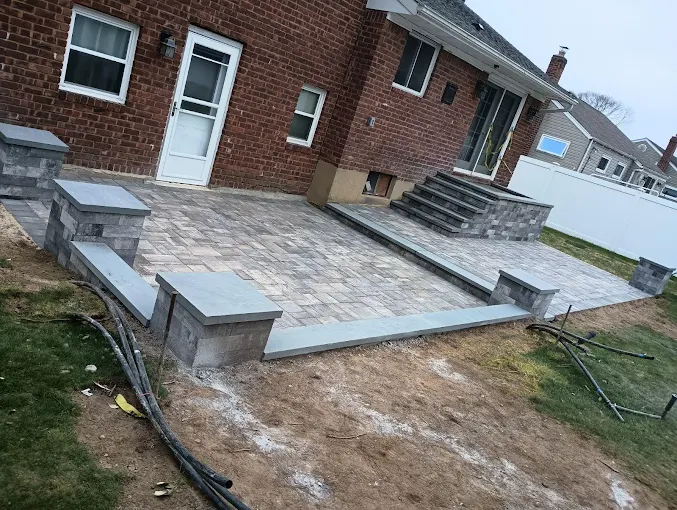

Discover how a professional home builder plans and designs functional living spaces. Learn expert insights from ORA Construction, a trusted Nassau County construction company serving Syosset, NY.

Located in the heart of Long Island’s Nassau County, Syosset, NY is a vibrant suburban community known for its welcoming neighborhoods, excellent schools, and easy access to New York City. With a population of just over 19,000 residents, Syosset offers a balance between peaceful suburban living and the conveniences of metropolitan life. Families, professionals, and longtime homeowners are drawn to the area for its tree-lined streets, strong community atmosphere, and beautiful residential architecture that ranges from classic mid-century homes to modern luxury properties.
The town also benefits from its proximity to some of Long Island’s most beloved attractions. Residents enjoy nearby outdoor spaces such as the scenic Syosset-Woodbury Community Park, as well as easy drives to the North Shore’s beaches and waterfront destinations. Local events, seasonal farmers markets, and community gatherings keep the area lively year-round, creating a place where homeowners truly invest in the quality and functionality of their living spaces.
Syosset experiences the classic northeastern climate, with warm summers averaging around 80°F and snowy winters that transform the region into a picturesque suburban landscape. The seasonal changes often inspire homeowners to rethink how their houses function throughout the year—from creating cozy winter living areas to designing open, airy interiors that take advantage of bright summer days.
Because the community continues to grow and evolve, many homeowners turn to experienced builders to enhance their homes. Whether planning renovations or new home construction Long Island, residents rely on skilled professionals who understand both architectural design and the practical needs of modern families. A trusted builder like ORA Construction, a respected Nassau County construction company, helps homeowners create spaces that feel purposeful, comfortable, and built for the future.
The planning process for functional living spaces begins long before construction tools appear on site. A professional home builder first works closely with homeowners to understand how they live inside their homes on a daily basis. This step may seem simple, but it often reveals important insights about space usage, family routines, and long-term goals.
Families in Syosset, for example, often want flexible layouts that allow rooms to serve multiple purposes. A living room might double as a home office during the day, while finished basements can transform into entertainment areas or guest suites. Understanding these needs helps the builder design spaces that evolve with the homeowner’s lifestyle.
At ORA Construction, this collaborative approach ensures every project begins with a clear vision. As a trusted general contractor Nassau County, the team carefully evaluates the existing structure, identifies opportunities for improvement, and proposes layouts that maximize comfort and efficiency without sacrificing style.
By focusing on the homeowner’s daily life rather than simply the structure itself, the planning phase sets the foundation for a house that truly works for the people who live in it.
For homeowners planning new home construction Long Island, these structural considerations are particularly important. Designing the framework correctly from the start ensures that every room serves its intended purpose while maintaining durability and long-term value.
8 Woodhollow Ln, Huntington, NY 11743, USA
Construction Company
Service, USA
Modern homes are expected to adapt to many different activities throughout the day. Children study, parents work remotely, and families gather for entertainment—all within the same house. Functional design must account for these changing needs.
Builders often incorporate open-concept living spaces that connect kitchens, dining areas, and family rooms. This design encourages interaction while still maintaining distinct areas for cooking, relaxing, and socializing.
At the same time, quiet spaces are equally important. Dedicated workspaces, reading nooks, or finished basements allow residents to focus without interruption. Many homeowners in Long Island invest in basement remodel Long Island projects to create versatile areas such as home theaters, fitness rooms, or guest accommodations.
By carefully balancing open gathering spaces with private retreats, a thoughtful builder ensures that every square foot contributes to a comfortable and adaptable home environment.
Ora Construction - Home Remodeling, Masonry & Landscape Design
199 Lafayette Drive Syosset,
NY 11791
Phone Number:
(516) 697-7680
Website:
https://ora-construction.com/
Functionality is not just about layout—it is also about choosing materials and structural elements that stand the test of time. Builders must evaluate durability, maintenance requirements, and long-term performance when selecting construction materials.
For example, quality masonry work plays a significant role in both structural stability and visual appeal. A skilled construction company masonry specialist may design features such as stone facades, structural retaining walls, or decorative elements that enhance the home’s character.
Similarly, a reliable masonry contractor Syosset NY ensures that brickwork, stonework, and other masonry installations are completed with precision. These elements not only strengthen the structure but also add timeless architectural charm that complements Long Island homes.
Concrete installations are another key component. From foundations to outdoor walkways, properly installed concrete provides durability and safety. Services such as driveway paving Nassau County help homeowners maintain both the functionality and curb appeal of their properties.
Functional living spaces do not stop at the front door. Outdoor areas often serve as extensions of the home itself, especially in suburban communities like Syosset where residents value outdoor relaxation and entertaining.
Builders design patios, decks, and seating areas that connect seamlessly with interior spaces. A well-planned outdoor environment might include a dining area for summer gatherings, shaded lounging spaces, and durable surfaces that withstand changing weather conditions.
An experienced patio and deck builder Syosset understands how to design outdoor structures that complement the home’s architecture while remaining structurally sound. These features allow homeowners to enjoy Long Island’s warm summer evenings and crisp autumn days without leaving their property.
During the planning stage, builders may also collaborate with professionals such as a landscape designer to ensure the outdoor layout aligns with the surrounding environment. While construction teams focus on structural components, coordinated planning helps create a cohesive and visually balanced property.
As families grow, their homes must grow with them. Expanding the existing structure can provide additional bedrooms, larger kitchens, or expanded living areas without requiring homeowners to relocate.
An experienced home addition contractor Long Island carefully evaluates the original structure before designing an expansion. The goal is to ensure the new addition blends seamlessly with the existing architecture while maintaining structural integrity.
Home additions often involve complex planning, including foundation work, framing, electrical systems, and interior finishing. A skilled general contractor Nassau County coordinates these phases so the project progresses smoothly from concept to completion.
When executed properly, an addition can dramatically increase both the functionality and the market value of a home.

Not every homeowner needs a completely new house. In many cases, strategic renovations can transform an outdated structure into a modern and highly functional living environment.
Projects such as concrete home remodeling Long Island often involve updating foundations, improving structural components, and redesigning interior spaces to better serve modern lifestyles. Kitchens, bathrooms, and basements are particularly popular renovation areas because they significantly impact daily living.
Builders also evaluate opportunities to improve energy efficiency, enhance natural lighting, and upgrade building materials during remodeling projects. These improvements ensure the home continues to perform well for decades.
With the guidance of a reliable builder like ORA Construction, homeowners gain access to expert planning, high-quality craftsmanship, and careful project management that keeps renovations organized and stress-free.
Professional contractors ensure proper preparation, reinforcement, and curing, which prevents structural problems and significantly increases the lifespan of the concrete surface.
When installed correctly, concrete surfaces can last between 30 and 50 years while requiring only minimal maintenance.
Common projects include driveways, patios, sidewalks, structural foundations, and outdoor living spaces that require strong, durable materials.
Yes. Well-designed driveways, patios, and walkways enhance both curb appeal and functionality, making homes more attractive to potential buyers.
Look for a licensed and insured contractor with experience in construction, masonry, and residential building projects, as well as a reputation for delivering reliable results.